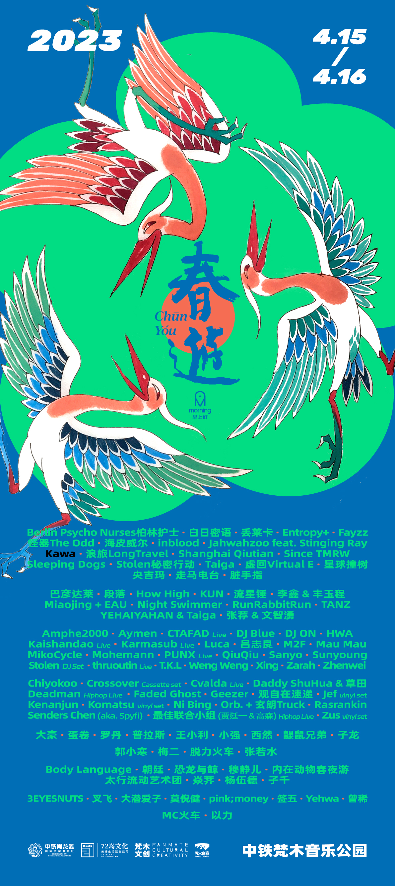

2023
真的是艰难的几年。
2020年，我们没有见面。
2021年，我们短暂地回来了一次。
然后，又一次停了下来。
直到2023年的春天，
我们终于又回来了。
那一年，好像所有人都在重新学习一些
曾经再普通不过的事情——
出门，旅行，去看演出，
在草地上晒太阳，
和朋友喝酒，
和很多不认识的人待在一起。
过去几年里，
这些事情突然变得没有那么理所当然。
所以这一次的春游，
好像也和以前不太一样。
人比以前更多了。
更明显的是，
我们开始看到越来越多来自成都以外，
甚至来自全国不同城市的人来到春游。
有人坐飞机，有人坐火车，
有人第一次来，
也有人终于又回来了。
但真正让我们记住的，
不是这些数字。
而是我们突然意识到，
原来能够再次见面，
本身就是一件值得庆祝的事情。
春天回来了。
春游也是。
Those were truly difficult years.
In 2020, we didn’t get to meet.
In 2021, we came back, briefly.
Then, once again, we had to stop.
It wasn’t until the spring of 2023
that we finally returned.
That year, it felt as if everyone was relearning
some of the most ordinary things—
going out, traveling, seeing live music,
lying in the sun on the grass,
having drinks with friends,
and spending time among people we didn’t know.
Over the previous few years,
none of these things had felt quite so ordinary anymore.
So this CHUNYOU
felt different from the ones before.
There were more people than ever.
More noticeably,
we began to see more and more people coming to CHUNYOU
from outside Chengdu,
from cities all across China.
Some came by plane. Some came by train.
Some were here for the first time.
Others had finally come back.
But what stayed with us
wasn’t the numbers.
It was the realization that
simply being able to meet again
was already something worth celebrating.
Spring was back.
So was CHUNYOU.